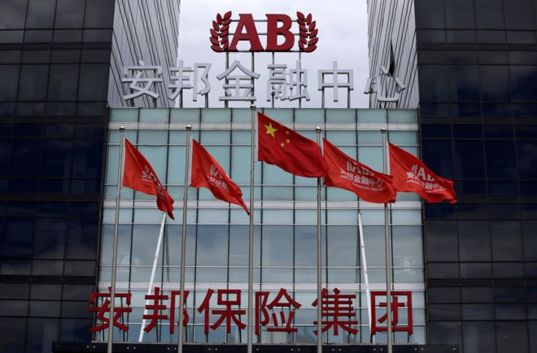
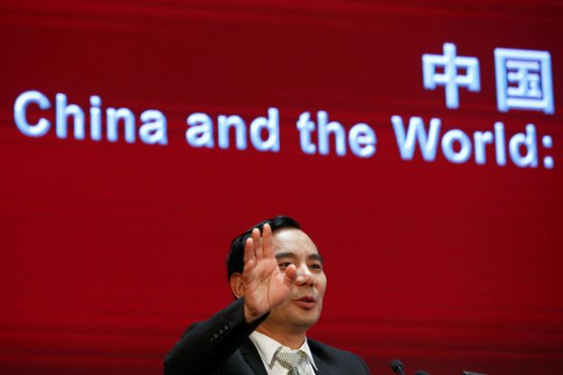

“中国令安邦出售华尔道夫和其他海外资产”
新闻来源:http://www.bbc.com/zhongwen/simp/chinese-news-40784093
发稿日期:2017/7/31

安邦在一份给彭博社的回应中写道："安邦目前尚无出售海外资产的打算。" (REUTERS)
美国彭博社周一（7月31日）报道称，中国要求安邦保险集团出售包括纽约华尔道夫酒店在内的海外资产。
彭博社引述不具名人士的话说，中国当局已经要求安邦将海外资产出售的收益带回中国。
不过，安邦在一份给彭博社的回应中写道："安邦目前尚无出售海外资产的打算。"
"目前，安邦的不同业务和运作一切如常，且公司有着足够的资金和足够的偿付能力。"
此前两个月，中国媒体报道称安邦的董事长吴小晖被警方拘留。安邦回应称：吴小晖"因个人原因暂不能履职"。
号称拥有近3000亿美元资产的安邦保险近年在全球大局收购资产，包括纽约的华尔道夫酒店。安邦集团在其网站上将此战略称为"全球资源整合"。在特朗普当选美国总统后，
吴小晖还曾一度因为与特朗普女婿库什纳的生意往来，引发关注。不过，这笔交易最终并未成行。
资本"外逃"

此前两个月，中国媒体报道称安邦的董事长吴小晖被警方拘留。 (REUTERS)
今年5月，中国保险行业的监管机构禁止安邦出售两个投资产品，并处罚安邦人寿3个月内禁止申报新产品。
中国当局近期对安邦等海外活跃企业的举动，被分析人士认为是北京试图阻止资本外逃的手段。除安邦外，还有海航集团、大连万达以及复星等企业。
分析人士指出，这些"灰犀牛"大企业也可能威胁中国经济。
安邦保险集团的前身是安邦财产保险股份有限公司，于2004年成立。在短短13年时间内，它崛起成为“一家全球化的保险公司，总资产约为19710亿人民币”。
吴小晖神秘的身份也引发外界关注。一些报道说，他是中国前领导人邓小平的外孙女婿；但也有报道说，他俩早已离异。